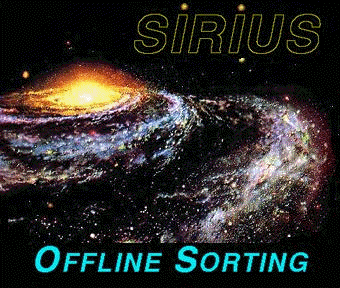

Offline sorting application

Sorting of event data from tape
The application routine must frequently be rewritten to fit a particular experiment. The recommended approach is to start with a existing routine as a template and modify this according to your needs. Observe that some variable definitions marked "system specific variables" is found in the first part of the routine. These should under no circumstances be changed !
The routine is called for every event to be sorted. It will thus highly affect the efficiency of the sorting. Deeply nested loops and other time consuming pieces of code should be avoided. The routine must NEVER contain I/O statements (READ, WRITE, ....)
- Try to remove shared memory segments for the spectra. Use shmctl() with cmd argument IPC_RMID
- Run process in Real-Time class. Real-Time priorities are assigned by priocntl
Tore.Ramsoy@nrpa.no
Tore Ramsøy
Norwegian Radiation Protection Authority
For problems on opal.nscl.msu.edu:
EMail to Andreas Schiller
NSCL/MSU